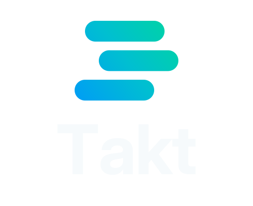
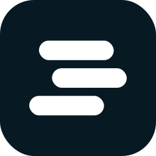
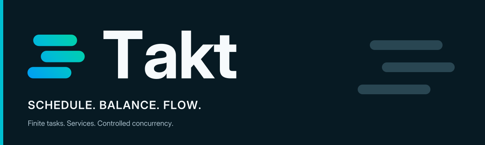

Production vector kit / v0.1
Schedule. Balance. Flow.
The selected Stack direction: three staggered bars, a restrained wordmark, and a cyan-to-mint accent on dark navy.
SVGs are clean reconstructions of the selected raster concept, not original vector files recovered from image generation. Wordmarks are outlined; no font downloads are needed.







Icon system

Documentation banners

Core palette
#071A23
#009DF5
#00BFD1
#00D6A0
#F6FAFC
#00766D
Use the right file.
SVG masters scale without raster blur. PNG exports cover ordinary documents and tools that do not support SVG. Use a mark or icon at small sizes and reserve the tagline signature for wider placements.
Bright cyan and mint are brand accents, not small text colors on white. The stylesheet supplies readable light/dark text pairs and visible keyboard focus.
Selected raster reference · PNG overview · Mark geometry · Design tokens